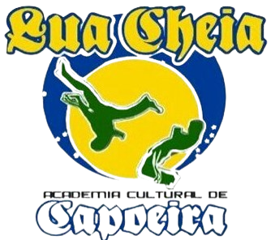
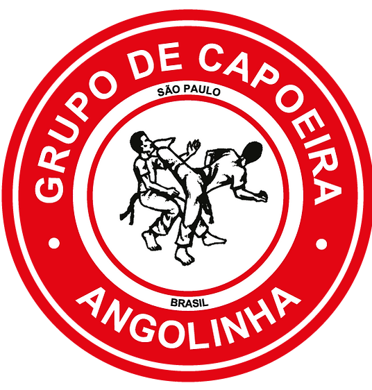

ACADEMIA LUA CHEIA
ACADEMIA LUA CHEIAACADEMIA LUA CHEIA

GRUPO ANGOLINHA

Vision
La Academia Cultural De Capoeira Lua Cheia fue fundada el 8 de
Enero de 2011, por Edicxon Fernández Martínez, Contramestre “Cabeleira”,
en Puerto Ordaz, Edo Bolívar, Venezuela. El 14 de Julio fue mudada a
Bogotá fundando así el Grupo de Capoeira Angolinha Colombia. Su sede
principal está en la ciudad de São Mateos, São Paulo-Brasil, llamada
“GRUPO DE ACADEMIAS DE CAPOEIRA ANGOLINHA” y fue
fundada el 05 de Abril de 1975, en la ciudad de Porto Ferreira, São Paulo
Brasil, por José Paulo Dias Mestre “Carapau”.
Capoeira existe y es reconocida en todos los países del mundo.Este
deporte surgió debido a la necesidad de libertad de los negros esclavos,
provenientes del África, que fueron en busca de refugio a los países de
América, para lograr escapar de las necesidades, hambre, miseria y así tener
una vida digna, de esta manera ellos lograron conquistar su libertad, y
decretaron para ellos la Ley “Áurea” creada por la Princesa Isabel el 13 de
Mayo de 1888.
MISION
La Academia Cultural de Capoeira Lua Cheia tiene como misión,
complementar la formación de recursos humanos, hacia un mejor nivel de
cultura, perspectivas de vida elevadas, y con una visión de futuro,
contribuyendo así al desarrollo social y cultural del país.
OBJETIVO
La Academia Cultural de Capoeira Lua Cheia tiene como objetivo,
difundir la capoeira en todos sus sentidos como deporte, cultura y tradición,
y capacitar atletas aptos para competir a nivel nacional e internacional.